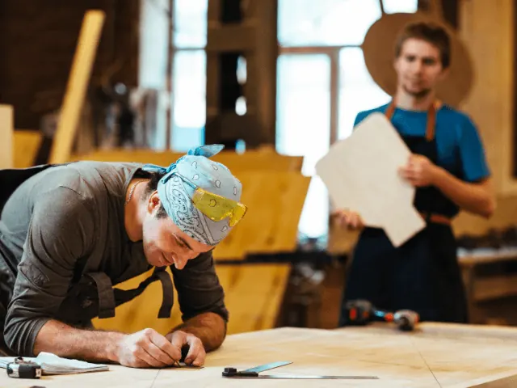

Houtbewerking Meesteren: Cursussen in Nijmegen
Gepubliceerd op 7 december 2023, bijgewerkt op 12 januari 2024
Onderdeel van de gids Cursussen in Nijmegen

Welkom in de wereld van houtbewerking in Nijmegen, waar ambacht en creativiteit samenkomen. Of je nu een beginner bent of je vaardigheden wilt aanscherpen, onze houtbewerkingscursussen in Nijmegen bieden een uitgebreide leerervaring. Ontdek de kunst van het werken met hout, van basisbewerkingen tot geavanceerde technieken. Onze ervaren instructeurs begeleiden je door het hele proces, waarbij zowel traditionele als moderne methoden worden verkend. In onze workshops leer je alles over het kiezen van het juiste hout, het gebruik van gereedschappen, en het afwerken van je projecten. Verbind je met gelijkgestemden en breng je houtbewerkingsdromen tot leven in Nijmegen.
Cursus houtbewerking in Nijmegen
Welkom in de wereld van houtbewerking in Nijmegen, waar ambacht en creativiteit samenkomen. Of je nu een beginner bent of je vaardigheden wilt aanscherpen, onze houtbewerkingscursussen in Nijmegen bieden een uitgebreide leerervaring. Ontdek de kunst van het werken met hout, van basisbewerkingen tot geavanceerde technieken. Onze ervaren instructeurs begeleiden je door het hele proces, waarbij zowel traditionele als moderne methoden worden verkend. In onze workshops leer je alles over het kiezen van het juiste hout, het gebruik van gereedschappen, en het afwerken van je projecten. Verbind je met gelijkgestemden en breng je houtbewerkingsdromen tot leven in Nijmegen.
Waar kan je een cursus houtbewerking in Nijmegen volgen?
Hout in Handen
In onze inspirerende cursusruimte in de historische Splendorfabriek in Nijmegen, delen wij, drie ervaren meubelmakers, onze passie en kennis door cursussen houtbewerken en meubelmaken aan te bieden. Ontdek tijdens onze basiscursus de fijne kneepjes van verschillende houtverbindingen, zoals de zwaluwstaart en pen-gat verbinding. Leer werken met Europese houtsoorten en maak kennis met de anatomie van hout. Verder ontwikkel je vaardigheden in het hanteren van essentiële meubelmakersgereedschappen en het afwerken van hout. Deze cursus is ideaal voor iedereen die geïnteresseerd is in het ambacht van meubelmaken.

Xyleem Meubelmakerij
Dompel jezelf onder in de wereld van houtbewerking en meubelmaken met de cursussen van Xyleem Meubelmakerij in Nijmegen. Sinds 2012 bieden wij praktische en boeiende cursussen aan voor zowel beginners als gevorderden, jong en oud. Onze cursusblokken, bestaande uit 8 lessen, worden het hele jaar door gegeven en duren elk 3 uur. Met een kleine groepsgrootte van 6 tot 7 deelnemers verzekeren we persoonlijke begeleiding voor iedereen.
Kies bij Xyleem voor het basisprogramma om vertrouwd te raken met hout en de basisvaardigheden van het meubelmaken, zoals schaven, zagen en beitelen. Of schrijf je in voor onze gevorderdenopdrachten waar je dieper ingaat op je vaardigheden en zelfs unieke meubelstukken kunt maken. Onze cursussen bieden een rijke leerervaring, van het ontdekken van verschillende houtsoorten tot het realiseren van jouw meubelmakervisie. Schrijf je in en start jouw creatieve reis in de houtbewerking!
Cursus houtbewerken bij hobbycentrum Nijmegen-Oost
In het Hobbycentrum Oost te Nijmegen bevindt zich een goed uitgeruste houtwerkplaats, waar creativiteit en vakmanschap samenkomen. Met een diversiteit aan machines en gereedschappen kun je hier je eigen projecten realiseren, of het nu gaat om het vervaardigen van houten speelgoed, een praktisch gebruiksvoorwerp, of een elegant designmeubel. Of je nu een beginner bent of al ervaring hebt, onze deskundige begeleiders staan klaar om je te ondersteunen bij het leren van diverse houtbewerkingstechnieken, zoals zagen, schaven, frezen, en het ambachtelijk maken van houtverbindingen.
Bij Hobbycentrum Oost moedigen we je aan om je eigen hout mee te brengen voor je projecten, hoewel er ook een beperkte voorraad tweedehands hout beschikbaar is. Er wordt gewerkt met een materiaal- en onderhoudskaart, waarbij je voor €0,55 per bezoek betaalt. Na tien betaalde bezoeken, krijg je de elfde keer gratis, als een blijk van waardering voor je deelname en creativiteit. Hobbycentrum Oost is de ideale plek om je passie voor houtbewerking te ontdekken en te ontwikkelen.

Cursus Meubelmaken bij Kopshout in Nijmegen
Bij Kopshout in Nijmegen leer je sinds 2003 het ambacht van meubelmaken van ervaren professionals in een praktische setting. De cursus biedt toegang tot professioneel handgereedschap en een beukenhouten werkbank in onze ruime werkplaats. Je verwerft vaardigheden in het gebruik van essentiële gereedschappen zoals blokschaaf, kapzaag, en beitels. De cursus omvat het maken van verschillende houtverbindingen en praktische werkstukken, zoals een houten hamer. Je leert over de eigenschappen van diverse Europese hardhoutsoorten en hun toepassingen in de meubelmakerij. Na het basisprogramma kun je kiezen voor vrije opdrachten, van eigen ontwerpen tot uitvoering van Kopshout ontwerpen. De cursus start tweemaal per jaar, in september en januari, en duurt 16 weken met wekelijkse lessen. Er zijn diverse dagdelen beschikbaar, waaronder avonden en weekendopties, voor flexibele deelname. Voor meer informatie of inschrijvingen kun je onze website bezoeken of contact opnemen via telefoon. Bezoek onze werkplaats aan 3e van Hezewijkstraat 23 in Nijmegen voor een persoonlijke indruk en meer details over de cursus.
Conclusie
In Nijmegen komen ambacht en creativiteit samen in diverse houtbewerkingscursussen, ideaal voor zowel beginners als gevorderden. Bij Hout in Handen, Xyleem Meubelmakerij, Hobbycentrum Nijmegen-Oost en Kopshout kun je de kunst van houtbewerken en meubelmaken leren, met begeleiding van ervaren instructeurs. Deze cursussen bieden een unieke kans om handgereedschap en houtbewerkingstechnieken te beheersen, verschillende houtsoorten te ontdekken en eigen projecten te realiseren. Verrijk je vaardigheden en breng je houtbewerkingsdromen tot leven in Nijmegen. Ben je trouwens op zoek naar een andere cursus, bekijk dan hier het cursusoverzicht. Bekijk hier het artikel over hoe een meubelmaker je verder kan helpen bij het ontwerpen van jouw droomcreatie.